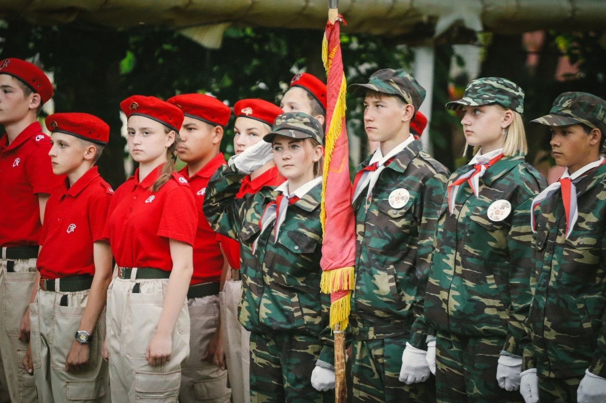

Всё достояние отчизны охраняя
На рубежах передних щит стоит
Броня России сила боевая
Свободу, мир и труд людей хранит.
Броня России нашей боевая
Свободу, мир и труд людей хранит.
Что это за игра?
Деятельность проекта военно-патриотической игры «Рубеж» направлена на военно-патриотическое воспитание допризывной молодёжи в возрасте 14-17 лет.
Проект направлен на реализацию задач государственной программы «Патриотическое воспитание граждан Российской Федерации».
«Рубеж» даст участникам бурю эмоций в реализации индивидуальных навыков по начальной военной подготовке, в совершенствовании военно-патриотической
и спортивной деятельность.
Цели и Задачи игры
1. Способствовать сохранению и укреплению традиций, связанных с патриотическим воспитанием школьников в рамках военно-спортивных игр.
2. Вовлечение участников проекта в процесс активного сохранения и расширения пространства исторической памяти о Великой Отечественной войне.
3. Развитие мотивации подростков и молодёжи допризывного возраста к защите Отечества и подготовка её к службе в Вооруженных Силах Российской Федерации.
4. Способствовать: приобретению навыков в области гражданской обороны.
5. Изучить основы безопасности военной службы, устройства и правил обращения со стрелковым оружием, основ тактической, строевой подготовок, сохранения здоровья и военно-медицинской подготовки.
История
Пионерская военно-спортивная игра в СССР представляла собой имитацию боевых действий,
похожую на военные учения. В ходе игры пионеры делились на команды и соревновались в различных военно-прикладных видах спорта с игровыми элементами.
Игра являлась частью системы начальной военной подготовки школьников в СССР
Официально военно-спортивная игра «Зарница»(Рубеж) была организована в СССР в 1967 году.
Целью игры было военно-патриотическое воспитание советской молодёжи.
«Зарница» входила в план организации начальной военной подготовки в средних учебных заведениях в связи с сокращением военной службы с 3 до 2 лет.
Основными организаторами всероссийской игры являются Министерство образования и науки РФ,
Министерство обороны РФ и общественная организация «Российский союз молодёжи».
В программу «Рубеж» входят смотр строя и песни,
проверка знаний по военной истории и символике России, правилам дорожного движения,
ориентирование на местности, стрельба, метание гранаты, силовые упражнения,
спортивная и военизированная эстафеты и другие военно-спортивные состязания.

Х
Какие существуют правила?
Правила для соблюдения:
соблюдать единую форму одежды;
выполнять команды командира;
соблюдать правильность построения в шеренги;
докладыват о готовности к смотру;
отвечать на приветствие и поздравление;
не нарушать дисциплину
не нарушать последовательность этапов
не нарушать правила безопасности
двигаться строевым шагом в составе отделения;
История появления правил для игры
Первые правила игры разработала учительница
Зоя Кротова из села Мысы Краснокамского района Пермской области.
23 февраля 1964 года была проведена первая игра совместно с военными.
Играющие в «Зарницу» участники делились на две команды, арбитра и нескольких нейтральных наблюдающих.
Затем, пока команды вырабатывают тактику, арбитр определяет местоположение баз обоих лагерей противников;
меткой базы является какой-то достаточно заметный предмет, например, флаг.
Целью обеих команд является захват флага противника.
У каждого из участвующих есть индикатор жизни/здоровья — погоны:
каждому человеку наклеиваются или пришиваются по два погона на плечи; у капитана их четыре.
Для того, чтобы «убить» человека, надо сорвать с него погоны;
если сорвана только половина, то человек не может бегать и просто ходит.
Чаще всего победитель определялся по сумме набранных им баллов:
за захват флагов и уничтожение противников баллы начисляются, за нечестную игру уменьшаются.
Иногда победителем считали первого, добывшего флаг противника.
Как проходит игра?
Игра построена в форме военно-спортивной эстафеты, где команды, продвигаясь по трассе, маршрут которой указан на карте. На маршруте находятся контрольные пункты — КП. На КП находится ведущий этапа, который сообщает содержание этапа и фиксирует правильность его выполнения. Отметку о выполнении этапа посредник заносит в маршрутный лист.
Какие есть задания?
Полоса препятствий, включает в себя игры и задания, в ходе выполнения которых, участники приобретут знания:
определение характера травмы, создающей наибольшую угрозу для жизни пострадавшего, и последовательности действий по его спасению;
Кровотечение на ноге:
Прижать кулаком бедренную артерию в точке ее пережатия.
Наложить жгут через опорный предмет (скатку бинта).
Вложить записку о времени наложения жгута.
Можно получить: 25 баллов
Удушье у младенца(кукла):
Убедиться в наличии пульса на плечевой артерии, повернуть его на живот.
В положении на животе ввести ему в рот указательный палец и извлечь из ротовой полости инородное тело.
Если младенец не отреагирует криком, то слегка похлопать ладонью по спине или ягодицам пока не появится крик.
Можно получить: 15 баллов
Мотоциклист (чучело) с признаками комы:
Устранить действие электрического тока на пострадавшего.
Убедиться в отсутствии признаков клинической смерти и наличии пульса на сонной артерии, положить в восстановительную позу на правом боку.
Можно получить: 30 баллов
2. Боевая подготовка (стрельба из имитационного оружия, приемы самозащиты, метание гранаты (МУЛЯЖ) в цель, бег с препятствием);
3. Радиохимическая, биологическая защита;
Подробнее
Противогаз
Противогаз в «походном» положении на левом боку.
Верх сумки на уровне талии, клапан застегнут.
По команде «Газы!» участник задерживает дыхание, закрывает глаза.
Вынимает противогаз из сумки.
Берёт шлем-маску обеими руками за утолщение края у нижней части так, чтобы большие пальцы ладони были снаружи, а остальные внутри её.
Прикладывает нижнюю часть шлем-маски под подбородок и резким движением рук вверх и назад натягивает её на голову так, чтобы не было складок,
а очковый узел располагался против глаз. Устраняет перекос и складки, если они образовались при надевании шлем-маски, делает полный выдох,
открывает глаза и возобновляет дыхание.
По команде судьи противогаз снимается произвольно.
Общевойсковой защитный комплект (ОЗК)
Общевойсковой защитный комплект (ОЗК) лежит на полу перед участником, противогаз в «походном» положении.
По команде «Плащ в рукава, чулки, перчатки надеть, газы!» участник должен: достать чулки и перчатки из капюшона плаща;
надеть защитные чулки, застегнуть хлястики, начиная с нижних и завязать обе тесьмы на поясном ремне;
надеть противогаз; надеть перчатки; надеть плащ в рукава, накинуть капюшон на голову и застегнуть борта плаща, оставляя противогазовую сумку под плащом;
надеть петли рукавов на большие пальцы кистей рук поверх перчаток. Выполнив норматив, подать установленный сигнал.
4. Нормативы по одеванию боекомплекта;
5. Получают навыки сборки/разборки автомата.
Для зрителей/болельшиков, ожидающих у финиша команды, организуются тематические, познавательно - развлекательные площадки, такие как: «Сборка/разборка автомата.
-третий, «Итоговый», этап, - реализации проекта.
Подробнее
Условия выполнения норматива.
1. Автомат лежит на столе (чистой подстилке) дульной частью вперед, а ручной пулемет установлен на сошку дульной частью влево. У автомата (ручного пулемета) магазин пристегнут.
2. Обучаемый находится у оружия (на исходном положении) с опущенными руками.
Порядок выполнения норматива
Руководитель занятия указывает подает команду: «К неполной разборке/сборке оружия – ПРИСТУПИТЬ». При выполнении неполной разборке/сборке автомата (ручного пулемета) обучаемый отделяет магазин и проверяет, нет ли патрона в патроннике. Вынимает пенал принадлежности из гнезда приклада. Последовательно отделяет шомпол, дульный тормоз-компенсатор (у пулемета – пламегаситель), крышку ствольной коробки, возвратный механизм, затворную раму с затвором, затвор от затворной рамы и газовую трубку со ствольной накладкой.
Время отсчитывается от команды «К неполной разборке/сборке оружия – ПРИСТУПИТЬ» до доклада обучаемого «ГОТОВО».
Вид оружия – автомат АК-74
Оценка по времени (секунд):
«отлично» - 18 сек «хорошо» - 22 сек «удовлетворительно» - 26 сек
Новости
В Севастополе стартовал финал региональной военно-патриотической спортивной игры «Рубеж-54»
22.09.2021
Участия в соревнованиях приняли 19 Севастопольских школ!
Призовые места заняли следующие школы:
1 место - Школа №60
2 место - Школа №5
3 место - Школа № 33
Елена Богомолова, директор департамента образования и науки г. Севастополя:
«С 67-го года, на следующий год будет юбилей.Эта игра ежегодно проходит.
Менялись государства, менялись дети, но игра оставалась.
Я сама, когда училась в школе — заканчивала тридцать четвертую — мы точно также принимали участие в игре «Рубеж».
Организаторы игры чтят традиции.
Однако это не мешает ежегодно обновлять и привносить что-то новое в конкурсную программу.
В этом году таким новшеством станет «Рубежный тик-ток».